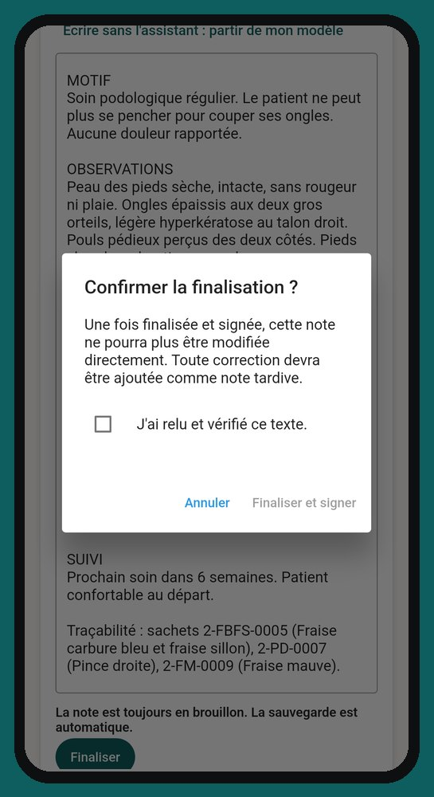

Logiciel pour infirmière à domicile et infirmière auxiliaire à son compte
Pour les infirmières et infirmiers qui soignent à domicile.
Infirmière, infirmière auxiliaire ou infirmier en pratique privée à domicile : votre journée se passe sur la route et chez vos patients. CliniQ Pro a été bâtie par une infirmière auxiliaire qui fait la route elle aussi.
En bref : CliniQ Pro est un logiciel et une application pour les infirmières et infirmiers à leur compte au Canada, auxiliaires compris. Agenda, dossiers, notes signées, reçus, dépenses et kilométrage automatique sont réunis dans une seule application, en français ou en anglais. Les données sont hébergées au Canada. 44,95 $ par mois ou 449,50 $ par année, après un essai gratuit de 14 jours sans carte de crédit.
Vos notes, signées sur place
Vous rédigez et finalisez votre note chez le patient. Une fois signée, elle est verrouillée à votre nom, avec la date et l'heure ; un oubli s'ajoute en note tardive, datée.

Le PTI et les ordonnances au dossier
Un plan thérapeutique infirmier ou une ordonnance reçue se range dans le dossier du patient, en PDF ou en photo, sans toucher à l'original.
La route et l'administration en moins
Itinéraire dans le GPS, kilométrage calculé, reçu remis sur place et dépenses photographiées : le soir, il n'y a plus rien à recopier.
Questions fréquentes
Quel est le meilleur logiciel pour les soins infirmiers à domicile ?
Le meilleur logiciel est celui qui réunit tout ce que vous faites dans une journée. CliniQ Pro, créé par une infirmière auxiliaire, regroupe l'agenda selon les lieux, le dossier patient avec bilan de santé, les notes signées et verrouillées, les reçus, les dépenses et le kilométrage automatique, dans une seule application, partout au Canada.
Quel est le meilleur logiciel infirmier ?
Celui qui convient à votre pratique. Pour une infirmière ou une infirmière auxiliaire à son compte, il doit réunir le dossier patient, les notes signées et verrouillées, le PTI, les reçus avec votre numéro de permis et le kilométrage. CliniQ Pro fait tout cela dans une seule application, en français et en anglais, avec des données hébergées au Canada, pour 44,95 $ par mois.
Les logiciels pour infirmiers libéraux de France fonctionnent-ils au Québec ?
Pas vraiment. Les logiciels conçus pour les infirmières et infirmiers libéraux (IDEL) en France sont bâtis autour du système français : carte Vitale, télétransmission Sesam-Vitale, hébergement certifié HDS. Au Québec et ailleurs au Canada, vous avez plutôt besoin de reçus pour les assurances avec votre numéro de permis, des taxes selon votre province, de données hébergées au Canada et du respect de la Loi 25 au Québec. CliniQ Pro est conçu pour ça.
Quel est le meilleur logiciel de facturation pour les infirmières et infirmiers ?
Pour une infirmière ou une infirmière auxiliaire à son compte au Canada, la facturation doit produire des reçus prêts pour les assurances, avec votre ordre et votre numéro de permis, et appliquer les taxes seulement sur ce qui est taxable. CliniQ Pro crée le reçu en PDF à partir du rendez-vous et le remet sur place, par courriel ou par texto. Voyez aussi notre guide des reçus d'assurance.
Quel est le meilleur logiciel gratuit de planning pour infirmières et infirmiers ?
Les outils gratuits gèrent surtout l'horaire. Pour une pratique à votre compte, il faut aussi le dossier, les notes et les reçus. CliniQ Pro offre 14 jours d'essai gratuit, sans carte de crédit, puis coûte 44,95 $ par mois ou 449,50 $ par année. Les taxes s'ajoutent selon votre province.
Quelle application est disponible pour les infirmières et infirmiers ?
CliniQ Pro est offerte sur Android et sur iPhone ou iPad, en français et en anglais, à compter du 1er janvier 2027. Elle convient aux infirmières, infirmières auxiliaires et autres professionnels de la santé à leur compte, à domicile ou en clinique.
Ça convient à mon métier ?
Oui. CliniQ Pro est faite pour tous les soins de santé à domicile, dont les soins infirmiers. Votre profil indique votre métier et votre ordre professionnel.
Puis-je utiliser CliniQ Pro hors du Québec ?
Oui. CliniQ Pro fonctionne partout au Canada, en français et en anglais. Les taxes s'ajoutent selon votre province.
Je suis infirmière auxiliaire ou infirmier auxiliaire. Est-ce pour moi ?
Oui. Les infirmières et infirmiers, auxiliaires compris, en pratique privée ont les mêmes outils. Votre profil indique votre métier et votre ordre professionnel.
CliniQ Pro m'aide-t-elle à respecter la Loi 25 ?
CliniQ Pro est conçue pour vous aider à respecter la Loi 25 au Québec et la LPRPDE ailleurs au Canada : données hébergées au Canada, accès limité à vos propres dossiers, notes signées non modifiables, consentements datés et journal des consultations.
CliniQ Pro fonctionne-t-elle sans réseau ?
Oui pour les photos et les reçus : sans réseau chez un patient, vos photos de soins et vos reçus de dépenses sont gardés en sécurité dans l'application, sur votre téléphone, puis envoyés tout seuls quand le réseau revient.
Puis-je saisir mes soins sur mon téléphone, chez le patient ?
Oui. Vous saisissez vos notes de soins sur votre téléphone ou votre tablette, directement chez le patient, puis vous les signez sur place. Plus besoin de tout retranscrire le soir.
CliniQ Pro convient-elle à une infirmière en pratique privée ?
Oui. CliniQ Pro est faite pour les infirmières et infirmiers en pratique privée, travailleuses ou travailleurs autonomes, qui offrent des soins à domicile privés ou en clinique privée (ce qu'on appelle en France une infirmière libérale). Agenda, notes signées, reçus et kilométrage sont au même endroit.
Lancement le 1er janvier 2027
Voyez l'application écran par écran, puis réservez votre place : nous vous écrirons dès l'ouverture.
Voir l'applicationRéservez votre placeVoir les tarifs
Inscrivez-vous avant le 1er janvier : essai gratuit de 14 jours + 10 $ de rabais sur votre premier paiement.
Une question ? soutien@cliniqpromobile.ca
Les fonctions
- Agenda et itinéraire
- Dossier patient et notes
- Reçus et factures
- Kilométrage automatique
- Dépenses et comptable
- Registre de stérilisation
- Services à domicile, tout-en-un
- Questions et réponses
- Tarifs
Pour votre métier
- Soins podologiques (soins des pieds)
- Soins de plaies et de stomies
- Physiothérapie, ergothérapie, réadaptation
- Inhalothérapie
- Santé mentale
- Soins dentaires à domicile
- Denturologie
- Esthétique médicale
- Massothérapie
- Orthophonie et audiologie
- Travail social
- Psychoéducation et éducation spécialisée
- Kinésiologie
- Ostéopathie
- Prélèvements à domicile
- Nutrition
Guides et comparatifs
- Classement des logiciels 2026
- Documentation clinique et saisie mobile
- Logiciel de clinique santé
- Gestion de clinique au Canada
- Guide : choisir son logiciel
- Alternatives à Jane App
- CliniQ Pro ou Jane
- Visite de l'application
- Importer vos patients
- Déduction du kilométrage
- TPS, TVH et TVQ
- Qui rembourse quoi
- L'argent de la pratique
- Infirmières auxiliaires hors Québec
- Glossaire FR-EN des titres
- Bien démarrer